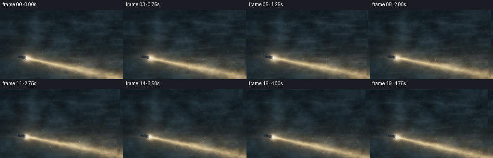
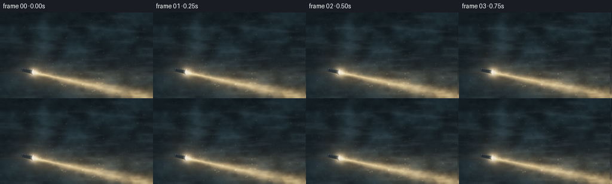
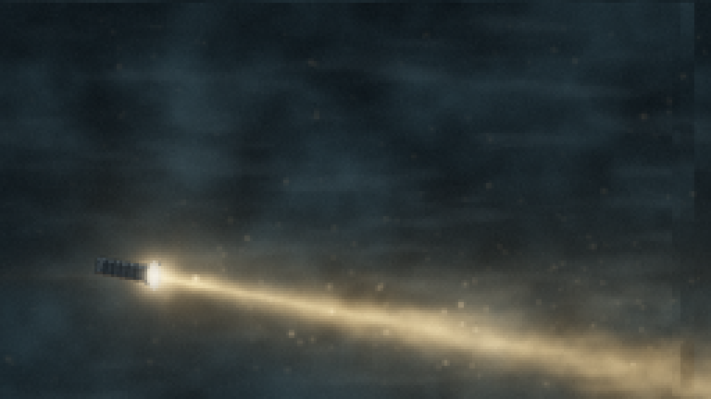
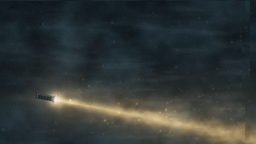
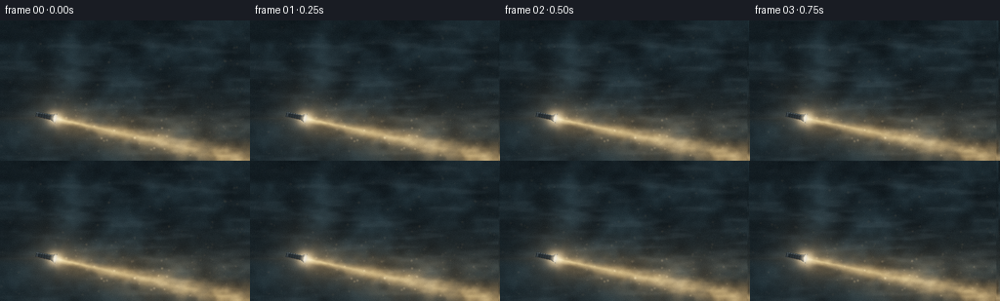

CODING AGENTS AS PIXEL WORLD MODELS
traex/DeepSeek-V4.1-Flash · phygen_054
点击播放 · 原生 RGB 像素
逐轮保存的候选
回放视频、检查图与代码变化。
每份候选均可单独播放。实际图片检查记录在下方工具轨迹中。
候选 01播放与检查图
点击播放 · 原生 RGB 像素

展开代码变化
--- 上一保存版本
+++ 本次保存版本
@@ -0,0 +1,332 @@
+"""Procedural flashlight-through-mist video for the PixelWorld task."""
+
+from pathlib import Path
+
+import numpy as np
+from PIL import Image, ImageDraw, ImageFilter
+
+from artifact_io import save
+
+
+CASE_DIR = Path(__file__).resolve().parent
+W, H = 256, 144
+SS = 2 # Supersampling factor.
+IW, IH = W * SS, H * SS
+N_FRAMES = 20
+FPS = 4.0
+
+
+def smooth_noise(rng, cells_x, cells_y, blur=0.0):
+ """Low-resolution value noise, smoothly resampled to render resolution."""
+ grid = rng.random((cells_y, cells_x), dtype=np.float32)
+ image = Image.fromarray(np.clip(grid * 255, 0, 255).astype(np.uint8), "L")
+ image = image.resize((IW, IH), Image.Resampling.BICUBIC)
+ if blur:
+ image = image.filter(ImageFilter.GaussianBlur(blur))
+ noise = np.asarray(image, dtype=np.float32) / 255.0
+ lo, hi = float(noise.min()), float(noise.max())
+ return (noise - lo) / max(hi - lo, 1e-6)
+
+
+def normalized(array):
+ lo, hi = float(array.min()), float(array.max())
+ return (array - lo) / max(hi - lo, 1e-6)
+
+
+def smoothstep(edge0, edge1, value):
+ t = np.clip((value - edge0) / (edge1 - edge0), 0.0, 1.0)
+ return t * t * (3.0 - 2.0 * t)
+
+
+def shift(array, x, y):
+ """Integer pixel wrap, adequate for slowly moving seamless-ish fog textures."""
+ return np.roll(array, (int(round(y)), int(round(x))), axis=(0, 1))
+
+
+def make_textures():
+ rng = np.random.default_rng(5401)
+ far = (
+ 0.55 * smooth_noise(rng, 9, 7, 1.4)
+ + 0.30 * smooth_noise(rng, 19, 13, 0.7)
+ + 0.15 * smooth_noise(rng, 42, 27)
+ )
+ mid = (
+ 0.50 * smooth_noise(rng, 13, 10, 1.1)
+ + 0.34 * smooth_noise(rng, 29, 19, 0.55)
+ + 0.16 * smooth_noise(rng, 61, 37)
+ )
+ # Anisotropic texture creates the long, slow wisps typical of dense haze.
+ wisps = (
+ 0.58 * smooth_noise(rng, 7, 25, 2.0)
+ + 0.28 * smooth_noise(rng, 13, 46, 1.0)
+ + 0.14 * smooth_noise(rng, 25, 74, 0.45)
+ )
+ detail = (
+ 0.55 * smooth_noise(rng, 31, 21, 0.35)
+ + 0.30 * smooth_noise(rng, 67, 43, 0.25)
+ + 0.15 * smooth_noise(rng, 111, 71)
+ )
+ return normalized(far), normalized(mid), normalized(wisps), normalized(detail)
+
+
+def dust_particles(rng):
+ count = 330
+ return {
+ "x": rng.uniform(0.015, 1.0, count).astype(np.float32),
+ "y": rng.uniform(0.04, 0.97, count).astype(np.float32),
+ "vx": rng.normal(0.00055, 0.00045, count).astype(np.float32),
+ "vy": rng.normal(0.0, 0.00015, count).astype(np.float32),
+ "phase": rng.uniform(0, 2 * np.pi, count).astype(np.float32),
+ "radius": rng.choice([0.65, 0.9, 1.2, 1.65], count, p=[0.35, 0.34, 0.23, 0.08]),
+ "gain": rng.uniform(0.35, 1.0, count).astype(np.float32),
+ }
+
+
+def beam_fields(frame_index, far, mid, wisps, detail):
+ tphase = frame_index / (N_FRAMES - 1)
+ frame_wave = 2.0 * np.pi * tphase
+
+ # Gentle handheld drift: the beam sweeps upward, with a small breathing motion.
+ source_x = IW * (0.218 + 0.0022 * np.sin(frame_wave + 0.4))
+ source_y = IH * (0.694 + 0.0030 * np.sin(frame_wave * 1.15 + 1.2))
+ angle = np.deg2rad(-12.0 + 1.25 * np.sin(frame_wave * 0.72 - 0.45))
+ ux, uy = np.cos(angle), -np.sin(angle)
+ vx, vy = np.sin(angle), np.cos(angle)
+
+ yy, xx = np.mgrid[0:IH, 0:IW].astype(np.float32)
+ dx, dy = xx - source_x, yy - source_y
+ along = dx * ux + dy * uy
+ across = dx * vx + dy * vy
+ positive = along > 0
+ along_safe = np.maximum(along, 0)
+
+ # Fog is moved at two depths. The finer layer makes the cone feel particulate.
+ fog_far = shift(far, -frame_index * 1.15, frame_index * 0.10)
+ fog_mid = shift(mid, -frame_index * 2.25, frame_index * 0.18)
+ fog_wisp = shift(wisps, -frame_index * 2.8, frame_index * 0.25)
+ fog_detail = shift(detail, -frame_index * 3.6, frame_index * 0.12)
+ density = np.clip(0.40 + 0.76 * fog_mid + 0.22 * fog_detail, 0.18, 1.5)
+
+ half_width = 6.5 + 0.054 * along_safe
+ inner = np.exp(-1.85 * (across / half_width) ** 2)
+ halo = np.exp(-0.92 * (across / (half_width * 2.25)) ** 2)
+ spill = np.exp(-0.80 * (across / (half_width * 4.0)) ** 2)
+ core_width = 1.7 + 0.019 * along_safe
+ core = np.exp(-1.6 * (across / core_width) ** 2)
+
+ longitudinal = np.exp(-along_safe / 710.0)
+ near_fade = smoothstep(0.0, 13.0, along)
+ wisp_mod = 0.58 + 0.78 * fog_wisp + 0.22 * fog_detail
+ flicker = 0.975 + 0.025 * np.sin(frame_wave * 2.1 + 0.7)
+ cone = (
+ (0.94 * inner + 0.19 * halo) * longitudinal * density * wisp_mod
+ + 0.47 * core * np.exp(-along_safe / 285.0) * (0.72 + 0.38 * fog_detail)
+ + 0.075 * spill * np.exp(-along_safe / 590.0)
+ )
+ cone *= positive * near_fade * flicker
+
+ # A faint reflected spill keeps the mist from going flat black around the cone.
+ glow_radius = np.hypot(dx, dy)
+ source_glow = np.exp(-(glow_radius / (13.0 + 1.8 * np.sin(frame_wave))) ** 2)
+ source_glow += 0.20 * np.exp(-glow_radius / 34.0)
+ source_glow += 0.08 * np.exp(-np.abs(dy) / 8.0) * np.exp(-np.abs(dx) / 110.0)
+
+ return {
+ "x": xx,
+ "y": yy,
+ "source": (source_x, source_y),
+ "axis": (ux, uy),
+ "perp": (vx, vy),
+ "angle": angle,
+ "beam": cone.astype(np.float32),
+ "source_glow": source_glow.astype(np.float32),
+ "fog_far": fog_far,
+ "fog_mid": fog_mid,
+ "fog_wisp": fog_wisp,
+ "density": density,
+ "phase": tphase,
+ }
+
+
+def render_particles(frame_index, fields, particles):
+ layer = Image.new("L", (IW, IH), 0)
+ draw = ImageDraw.Draw(layer)
+ tphase = fields["phase"]
+ beam = fields["beam"]
+
+ for i in range(len(particles["x"])):
+ travel = frame_index * particles["vx"][i]
+ x = (particles["x"][i] + travel) % 1.02 - 0.01
+ y = particles["y"][i] + frame_index * particles["vy"][i]
+ y += 0.0014 * np.sin(tphase * 2 * np.pi + particles["phase"][i])
+ px, py = int(x * IW), int(y * IH)
+ if not (0 <= px < IW and 0 <= py < IH):
+ continue
+ local_beam = float(beam[min(max(py, 0), IH - 1), min(max(px, 0), IW - 1)])
+ twinkle = 0.72 + 0.28 * np.sin(tphase * 2 * np.pi * 1.5 + particles["phase"][i])
+ value = (0.08 + 1.45 * min(local_beam, 0.90)) * particles["gain"][i] * twinkle
+ if value < 0.045:
+ continue
+ radius = particles["radius"][i]
+ draw.ellipse((px - radius, py - radius, px + radius, py + radius),
+ fill=int(np.clip(value * 255, 0, 255)))
+
+ layer = layer.filter(ImageFilter.GaussianBlur(1.05))
+ return np.asarray(layer, dtype=np.float32) / 255.0
+
+
+def draw_flashlight(fields):
+ sx, sy = fields["source"]
+ ux, uy = fields["axis"]
+ vx, vy = fields["perp"]
+
+ rgb = Image.new("RGB", (IW, IH), (0, 0, 0))
+ alpha = Image.new("L", (IW, IH), 0)
+ draw_rgb = ImageDraw.Draw(rgb)
+ draw_alpha = ImageDraw.Draw(alpha)
+
+ def point(distance, offset):
+ return (sx + ux * distance + vx * offset,
+ sy + uy * distance + vy * offset)
+
+ rear = -42.0
+ neck = -7.0
+ lip = 2.5
+ body_half = 6.0
+ head_half = 10.2
+
+ body = [
+ point(rear, -body_half),
+ point(neck, -body_half),
+ point(neck, body_half),
+ point(rear, body_half),
+ ]
+ draw_rgb.polygon(body, fill=(20, 26, 30))
+ draw_alpha.polygon(body, fill=255)
+
+ head = [
+ point(neck, -body_half),
+ point(lip, -head_half),
+ point(lip, head_half),
+ point(neck, body_half),
+ ]
+ draw_rgb.polygon(head, fill=(34, 41, 45))
+ draw_alpha.polygon(head, fill=255)
+
+ # Narrow cool rim and warm bounce separate the dark body from the mist.
+ draw_rgb.line([point(rear + 1, -body_half + 0.8), point(neck, -body_half + 0.8)],
+ fill=(68, 82, 88), width=2)
+ draw_rgb.line([point(neck, -body_half + 0.8), point(lip, -head_half + 0.8)],
+ fill=(91, 98, 96), width=2)
+ draw_rgb.line([point(rear + 1, body_half - 0.7), point(neck, body_half - 0.7)],
+ fill=(43, 35, 27), width=2)
+
+ # Grip rings, clipped inside the barrel.
+ for distance in np.arange(rear + 7, neck - 2, 5.2):
+ draw_rgb.line([point(distance, -body_half + 1.0), point(distance, body_half - 1.0)],
+ fill=(8, 12, 15), width=1)
+
+ # Tail cap and the raised front bezel.
+ draw_rgb.line([point(rear + 2.0, -body_half + 1.5), point(rear + 2.0, body_half - 1.5)],
+ fill=(44, 52, 56), width=2)
+ draw_rgb.line([point(lip, -head_half), point(lip, head_half)],
+ fill=(77, 81, 78), width=2)
+
+ # Foreshortened, bright lens at the beam origin.
+ lens_box = (sx - 4.5, sy - 10.2, sx + 4.5, sy + 10.2)
+ draw_rgb.ellipse(lens_box, fill=(239, 217, 174))
+ draw_alpha.ellipse(lens_box, fill=255)
+ inner_box = (sx - 2.2, sy - 7.6, sx + 2.2, sy + 7.6)
+ draw_rgb.ellipse(inner_box, fill=(255, 250, 229))
+ draw_alpha.ellipse(inner_box, fill=255)
+
+ return np.asarray(rgb, dtype=np.float32) / 255.0, np.asarray(alpha, dtype=np.float32) / 255.0
+
+
+def render_frame(frame_index, textures, particles):
+ far, mid, wisps, detail = textures
+ fields = beam_fields(frame_index, far, mid, wisps, detail)
+ xx, yy = fields["x"], fields["y"]
+ fog_far = fields["fog_far"]
+ fog_mid = fields["fog_mid"]
+ fog_wisp = fields["fog_wisp"]
+ beam = fields["beam"]
+ source_glow = fields["source_glow"]
+
+ xn = xx / IW
+ yn = yy / IH
+
+ # Deep blue-gray haze, with denser, slightly brighter banks toward the bottom.
+ ambient_strength = 0.042 + 0.125 * fog_far ** 1.55 + 0.050 * fog_mid ** 2.0
+ bottom_lift = 0.018 * smoothstep(0.40, 1.0, yn)
+ ambient_strength += bottom_lift
+ ambient_color = np.array([0.42, 0.69, 0.80], dtype=np.float32)
+ image = ambient_strength[..., None] * ambient_color
+
+ # Faint depth variation before the direct light is added.
+ image += (0.010 + 0.025 * fog_wisp[..., None]) * np.array([0.52, 0.66, 0.72])
+
+ # Warm volumetric scattering from the flashlight.
+ beam_color = np.array([1.00, 0.735, 0.390], dtype=np.float32)
+ image += beam[..., None] * beam_color
+
+ # The source has a concentrated bloom and a very restrained lens streak.
+ image += source_glow[..., None] * np.array([1.00, 0.77, 0.47], dtype=np.float32)
+
+ # Lighted motes make the volume readable without looking like snow.
+ particle_gain = render_particles(frame_index, fields, particles)
+ particle_color = np.array([1.00, 0.79, 0.52], dtype=np.float32)
+ image += particle_gain[..., None] * particle_color
+
+ # A very soft foreground veil crosses the beam and gives the mist thickness.
+ veil = smoothstep(0.48, 0.92, fog_wisp)
+ veil *= 0.018 + 0.025 * (0.5 + 0.5 * np.sin(fields["phase"] * 2 * np.pi))
+ image += veil[..., None] * np.array([0.52, 0.64, 0.68])
+
+ # Flashlight body occludes both the source bloom and the mist behind it.
+ body_rgb, body_alpha = draw_flashlight(fields)
+ image = image * (1.0 - body_alpha[..., None]) + body_rgb * body_alpha[..., None]
+
+ # Small post-object bloom at the lens; it remains tight enough to preserve the silhouette.
+ sx, sy = fields["source"]
+ lens_distance = np.hypot(xx - sx, yy - sy)
+ lens_glow = 1.10 * np.exp(-(lens_distance / 7.0) ** 2)
+ lens_glow += 0.12 * np.exp(-lens_distance / 18.0)
+ image += lens_glow[..., None] * np.array([1.0, 0.84, 0.60])
+
+ # Gentle cool fill at frame edges and a stronger upper vignette.
+ radial = ((xn - 0.52) / 0.74) ** 2 + ((yn - 0.55) / 0.92) ** 2
+ vignette = np.clip(1.0 - 0.34 * radial, 0.50, 1.0)
+ image *= vignette[..., None]
+
+ # Filmic shoulder keeps the hottest source clean while preserving fog detail.
+ image = 1.0 - np.exp(-1.34 * np.maximum(image, 0.0))
+ image = np.power(np.clip(image, 0.0, 1.0), 0.82)
+
+ # Slight cool-shadow / warm-highlight grade.
+ luminance = np.sum(image * np.array([0.2126, 0.7152, 0.0722]), axis=2, keepdims=True)
+ image += (1.0 - np.clip(luminance * 1.6, 0.0, 1.0)) * np.array([-0.006, 0.002, 0.012])
+ image += np.clip(luminance - 0.58, 0.0, 1.0) * np.array([0.010, 0.002, -0.010])
+
+ frame = Image.fromarray(np.clip(image * 255, 0, 255).astype(np.uint8), "RGB")
+ frame = frame.resize((W, H), Image.Resampling.LANCZOS)
+ frame_array = np.asarray(frame, dtype=np.float32)
+
+ # Fine sensor grain and ordered dithering avoid visible banding in the mist.
+ rng = np.random.default_rng(9300 + frame_index)
+ grain = rng.normal(0.0, 1.15, (H, W, 1)).astype(np.float32)
+ frame_array += grain
+ frame_array = np.clip(np.rint(frame_array), 0, 255).astype(np.uint8)
+ return frame_array
+
+
+def main():
+ textures = make_textures()
+ particles = dust_particles(np.random.default_rng(8027))
+ frames = np.stack([render_frame(i, textures, particles) for i in range(N_FRAMES)])
+ save(frames, CASE_DIR)
+ print(f"Saved {frames.shape} RGB frames to {CASE_DIR}")
+
+
+if __name__ == "__main__":
+ main()
候选 02播放与检查图
点击播放 · 原生 RGB 像素


展开代码变化
--- 上一保存版本
+++ 本次保存版本
@@ -116,12 +116,13 @@
longitudinal = np.exp(-along_safe / 710.0)
near_fade = smoothstep(0.0, 13.0, along)
- wisp_mod = 0.58 + 0.78 * fog_wisp + 0.22 * fog_detail
+ wisp_mod = 0.50 + 0.72 * fog_wisp + 0.34 * fog_detail
+ wisp_mod *= 0.86 + 0.20 * fog_mid
flicker = 0.975 + 0.025 * np.sin(frame_wave * 2.1 + 0.7)
cone = (
- (0.94 * inner + 0.19 * halo) * longitudinal * density * wisp_mod
- + 0.47 * core * np.exp(-along_safe / 285.0) * (0.72 + 0.38 * fog_detail)
- + 0.075 * spill * np.exp(-along_safe / 590.0)
+ (0.90 * inner + 0.20 * halo) * longitudinal * density * wisp_mod
+ + 0.38 * core * np.exp(-along_safe / 285.0) * (0.66 + 0.46 * fog_detail)
+ + 0.090 * spill * np.exp(-along_safe / 590.0)
)
cone *= positive * near_fade * flicker
@@ -189,11 +190,21 @@
return (sx + ux * distance + vx * offset,
sy + uy * distance + vy * offset)
- rear = -42.0
+ def oriented_ellipse(center_distance, center_offset, radial_along, radial_across):
+ angles = np.linspace(0.0, 2.0 * np.pi, 30, endpoint=False)
+ return [
+ point(
+ center_distance + np.cos(a) * radial_along,
+ center_offset + np.sin(a) * radial_across,
+ )
+ for a in angles
+ ]
+
+ rear = -39.0
neck = -7.0
lip = 2.5
- body_half = 6.0
- head_half = 10.2
+ body_half = 5.3
+ head_half = 9.5
body = [
point(rear, -body_half),
@@ -201,7 +212,7 @@
point(neck, body_half),
point(rear, body_half),
]
- draw_rgb.polygon(body, fill=(20, 26, 30))
+ draw_rgb.polygon(body, fill=(17, 23, 27))
draw_alpha.polygon(body, fill=255)
head = [
@@ -210,7 +221,7 @@
point(lip, head_half),
point(neck, body_half),
]
- draw_rgb.polygon(head, fill=(34, 41, 45))
+ draw_rgb.polygon(head, fill=(29, 36, 40))
draw_alpha.polygon(head, fill=255)
# Narrow cool rim and warm bounce separate the dark body from the mist.
@@ -232,13 +243,13 @@
draw_rgb.line([point(lip, -head_half), point(lip, head_half)],
fill=(77, 81, 78), width=2)
- # Foreshortened, bright lens at the beam origin.
- lens_box = (sx - 4.5, sy - 10.2, sx + 4.5, sy + 10.2)
- draw_rgb.ellipse(lens_box, fill=(239, 217, 174))
- draw_alpha.ellipse(lens_box, fill=255)
- inner_box = (sx - 2.2, sy - 7.6, sx + 2.2, sy + 7.6)
- draw_rgb.ellipse(inner_box, fill=(255, 250, 229))
- draw_alpha.ellipse(inner_box, fill=255)
+ # A foreshortened lens follows the flashlight's actual beam axis.
+ lens = oriented_ellipse(0.8, 0.0, 3.0, head_half - 1.0)
+ draw_rgb.polygon(lens, fill=(237, 211, 160))
+ draw_alpha.polygon(lens, fill=255)
+ inner_lens = oriented_ellipse(1.3, 0.0, 1.45, head_half - 3.6)
+ draw_rgb.polygon(inner_lens, fill=(255, 247, 216))
+ draw_alpha.polygon(inner_lens, fill=255)
return np.asarray(rgb, dtype=np.float32) / 255.0, np.asarray(alpha, dtype=np.float32) / 255.0
@@ -267,7 +278,7 @@
image += (0.010 + 0.025 * fog_wisp[..., None]) * np.array([0.52, 0.66, 0.72])
# Warm volumetric scattering from the flashlight.
- beam_color = np.array([1.00, 0.735, 0.390], dtype=np.float32)
+ beam_color = np.array([1.00, 0.705, 0.340], dtype=np.float32)
image += beam[..., None] * beam_color
# The source has a concentrated bloom and a very restrained lens streak.
@@ -290,7 +301,7 @@
# Small post-object bloom at the lens; it remains tight enough to preserve the silhouette.
sx, sy = fields["source"]
lens_distance = np.hypot(xx - sx, yy - sy)
- lens_glow = 1.10 * np.exp(-(lens_distance / 7.0) ** 2)
+ lens_glow = 0.96 * np.exp(-(lens_distance / 6.2) ** 2)
lens_glow += 0.12 * np.exp(-lens_distance / 18.0)
image += lens_glow[..., None] * np.array([1.0, 0.84, 0.60])
候选 03播放与检查图
点击播放 · 原生 RGB 像素

展开代码变化
代码未变化；重新保存了产物。
候选 04播放与检查图
可观测工具轨迹
实际执行的命令与返回图片。
命令 1exit 0
/bin/bash -c "pwd && rg --files -g '"'!*.mp4'"' -g '"'!*.mov'"' -g '"'!*.avi'"' | sed -n '1,160p'"
命令 2exit 0
/bin/bash -c 'cat prompt.txt'
命令 3exit 0
/bin/bash -c 'cat GENERATION_RULES.md'
命令 4exit 0
/bin/bash -c 'cat task_spec.json'
命令 5exit 0
/bin/bash -c "ls -la && find . -maxdepth 2 -type f -printf '%p %s bytes\\n' | sort | sed -n '1,160p'"
命令 6exit 0
/bin/bash -c "sed -n '1,260p' artifact_io.py"
命令 7exit 0
/bin/bash -c 'python generate.py'
命令 8exit 0
/bin/bash -c "python - <<'PY'
import numpy as np
from PIL import Image
from pathlib import Path
p=Path('frames')
a=np.stack([np.asarray(Image.open(p/f'{i:02d}.png')) for i in range(20)])
print('shape',a.shape,'dtype',a.dtype)
print('range',a.min(),a.max(),'mean/std',a.mean(axis=(0,1,2)).round(3),a.std(axis=(0,1,2)).round(3))
print('per-frame mean/std')
for i in range(20):
print(i, round(float(a[i].mean()),2), round(float(a[i].std()),2))
d=np.abs(np.diff(a.astype(np.int16),axis=0))
print('temporal abs diff mean/max',d.mean().round(3),d.max(),'changed pixels >2',np.mean(d.max(axis=3)>2).round(4))
print('black fraction <8',float(np.mean(a.max(axis=3)<8)))
PY"命令 9exit 0
/bin/bash -c 'ffprobe -v error -show_entries stream=codec_name,width,height,pix_fmt,r_frame_rate,nb_frames -show_entries format=duration,size -of default=noprint_wrappers=1 frames/10.png 2>&1; ffmpeg -version | head -1'
命令 10exit 0
/bin/bash -c "python - <<'PY'
from PIL import Image
im=Image.open('frames/10.png')
im.resize((1024,576), Image.Resampling.NEAREST).save('.tmp/frame10_4x.png')
PY"命令 11exit 0
/bin/bash -c 'mkdir -p .tmp/candidate01 && cp inspection.png transition_check.png pixels.npz .tmp/candidate01/ && cp -r frames .tmp/candidate01/frames'
命令 12exit 0
/bin/bash -c 'python generate.py'
命令 13exit 0
/bin/bash -c "python - <<'PY'
import json
from pathlib import Path
import numpy as np
from PIL import Image
spec=json.loads(Path('task_spec.json').read_text())
paths=sorted(Path('frames').glob('*.png'))
assert len(paths)==spec['frames'], (len(paths), spec['frames'])
a=np.stack([np.asarray(Image.open(p).convert('RGB')) for p in paths])
assert a.shape==(spec['frames'], spec['height'], spec['width'], 3), a.shape
assert a.dtype==np.uint8
z=np.load('pixels.npz')['pixels']
assert z.shape==(spec['height'], spec['width'], spec['frames']), z.shape
recovered=np.stack([((z[:,:,i]>>16)&255, (z[:,:,i]>>8)&255, z[:,:,i]&255) for i in range(spec['frames'])],axis=0).transpose(0,2,3,1).astype(np.uint8)
assert np.array_equal(a,recovered)
d=np.abs(np.diff(a.astype(np.int16),axis=0))
assert np.mean(d)>0.3
print('frames:', len(paths))
print('resolution:', f\"{a.shape[2]}x{a.shape[1]}\")
print('fps:', spec['fps'], 'duration:', len(paths)/spec['fps'])
print('pixel range:', int(a.min()), int(a.max()))
print('mean RGB:', np.round(a.mean(axis=(0,1,2)), 2).tolist())
print('temporal mean delta:', round(float(d.mean()),3))
print('artifact:', Path('index.html').stat().st_size, 'bytes')
PY
python -m py_compile generate.py
ls -lh pixels.npz index.html inspection.png transition_check.png generate.py"命令 14exit 0
/bin/bash -c "git status --short 2>/dev/null || true; find frames -maxdepth 1 -type f | wc -l; test -s index.html && test -s pixels.npz && test -s frames/19.png && echo 'required artifacts present'"
视觉工具实际返回图片 1

视觉工具实际返回图片 2
视觉工具实际返回图片 3

视觉工具实际返回图片 4

视觉工具实际返回图片 5

视觉工具实际返回图片 6

视觉工具实际返回图片 7

保存候选 4 份；完成命令 14 次；可验证图片返回 7 张。原始 API 响应与完整日志保留在本地。